Module 01
Introduction
In 2026, a clear divide is forming. On one side, people use Claude Code to build applications, automate workflows, and ship work that used to take weeks. On the other side, people still do everything manually — limited by what they can accomplish alone.
This course is designed to put you on the right side of that divide. It is a complete beginner-to-advanced guide covering every major Claude concept with real working examples. Whether you come from a technical or non-technical background, the goal is the same: understand the system deeply enough to use it daily and explain it to others.
The agentic loop, installation on all operating systems, slash commands, permission modes,
the .claude folder, CLAUDE.md, context management, skills, hooks, MCP,
sub-agents, agent teams, plugins, scheduling, and a capstone full-stack build.
Each section includes architecture diagrams and practical examples — model tiers, agentic loop, CLAUDE.md, skills, MCP, hooks, and more.
Module 02
What is Claude?
Claude is an AI assistant built by Anthropic, an AI research company focused on safety and reliability. Anthropic was founded by researchers who previously worked on large language models elsewhere; their mission is to build capable AI systems that are trustworthy and aligned with human values.
Anthropic vs. the broader AI landscape
If ChatGPT made conversational AI mainstream through OpenAI, Claude is Anthropic's equivalent product line. Both companies build large language models (LLMs), but Anthropic emphasizes constitutional AI, safety research, and enterprise-grade reliability.
The Claude model family
Claude models are organized into tiers, each optimized for different trade-offs:
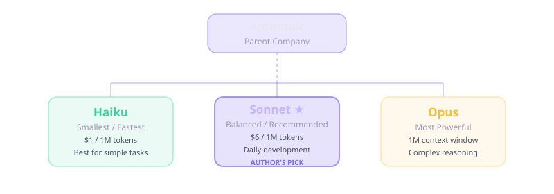
| Model | Strength | Best for |
|---|---|---|
| Haiku | Fastest, lowest cost | Quick tasks, sub-agents, high-volume automation |
| Sonnet | Balanced speed and intelligence | Daily coding, analysis, most Claude Code sessions |
| Opus | Most capable, deepest reasoning | Complex architecture, hard debugging, research |
What is an LLM?
At its core, every Claude model is a Large Language Model — a neural network trained on vast amounts of text (and increasingly images and code). Think of it like a brain trained on books, documentation, and conversations. When you send a prompt, the model predicts the most likely next tokens (words and symbols) to produce a coherent response.
Claude, ChatGPT, and Gemini all work this way. The differences lie in training data, safety tuning, context window size, tool use, and how each product wraps the model in a user interface or agent runtime.
Claude on the web is a conversation with a brain. Claude Code is that same brain with hands — it can read files, run commands, and change your project.
Sonnet is the sweet spot for most Claude Code sessions — strong enough for real work without Opus-level cost. Use Haiku for sub-agents and high-volume tasks; reserve Opus for the hardest reasoning.
Module 03
Claude Surfaces: Web, Desktop, and Code
Claude is available in three primary forms. Understanding the distinction is essential.
| Surface | What it is | Can access your files? |
|---|---|---|
| Claude.ai (web) | Browser chat interface at claude.ai | No — unless you upload files manually |
| Claude Desktop | Native macOS / Windows app | Limited — chat + Cowork features; not full filesystem |
| Claude Code | Terminal / IDE agent | Yes — full read/write in your project directory |
Claude.ai — the chat interface
Sign in at claude.ai with email, Google, or Apple. The interface is a text box where you ask questions, upload documents, analyze data, write content, or get coding help. Free and paid tiers (Pro, Max) unlock higher usage limits and advanced models.
Claude Desktop
The desktop app wraps the same Claude brain in a native window. It adds conveniences like system notifications and quick access, but it is still fundamentally a chat product — not a coding agent with shell access.
Claude Code — brain with hands
Claude Code installs on your machine and runs in your terminal or IDE. It connects to Anthropic's API for the model, but executes locally: reading files, running bash commands, installing packages, writing code, and iterating until the task is done.
# Example: Claude Code can do what chat cannot
You: "Create a Python script that generates a PDF explaining bubble sort"
Claude Code:
1. Writes bubble_sort.py
2. pip install reportlab
3. Runs the script
4. Confirms output.pdf existsClaude chat answers questions. Claude Code does work. That difference — passive conversation vs. active agent — is the foundation of everything that follows.
Module 04
The Agentic Loop
The agentic loop is the most important concept in Claude Code. It explains why Claude can autonomously complete multi-step tasks instead of giving you instructions to run yourself.
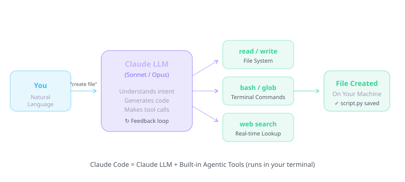
Built-in tools
- read / write / edit — create and modify project files
- bash — run terminal commands (install, test, git)
- glob / grep — search the codebase efficiently
- web_search / web_fetch — look up docs and live information
- You give a task — a prompt or instruction in natural language.
- Read context — Claude loads relevant files, CLAUDE.md, conversation history, and tool definitions.
- Plan — it decides which tools and steps are needed.
- Act — it runs tools: read/write files, bash commands, web fetch, MCP calls.
- Observe — it reads the output of each action.
- Iterate — if the task is not complete, it loops back to plan/act/observe.
- Report — when done, it summarizes what was accomplished.
This loop runs automatically. You are not micromanaging each command — you are directing an agent that thinks, acts, and self-corrects. Skills, hooks, MCP, and sub-agents all plug into different stages of this loop.
Module 05
Installation & Setup
Claude Code runs on Windows, macOS, and Linux. The recommended install is via the official installer script in your terminal.
Prerequisites
- Basic terminal comfort (no deep coding required — Claude does the heavy lifting)
- VS Code or Cursor recommended for the Claude Code extension
- Anthropic API credits (pay-as-you-go) or Claude Pro/Max subscription
Windows (PowerShell)
irm https://claude.ai/install.ps1 | iexmacOS / Linux
curl -fsSL https://claude.ai/install.sh | bash
# Alternative:
npm install -g @anthropic-ai/claude-codeVerify installation
claude --version
claudeOn first run, Claude Code prompts you to authenticate with your Anthropic account. You can use a Claude Pro/Max subscription or API billing.
System requirements
- Node.js may be required depending on install method (native installer often bundles dependencies).
- Git recommended for version-controlled projects.
- A terminal: PowerShell, Terminal.app, or any Linux shell.
Running in VS Code / Cursor
Install the official Anthropic Claude Code extension from the marketplace. It embeds Claude in your editor sidebar with the same agent capabilities as the terminal.
Permission modes
Claude Code supports different autonomy levels:
- Normal — asks before running potentially destructive commands.
- Plan mode — read-only; Claude plans but does not execute.
- Auto-accept — runs approved tool categories without repeated prompts.
If claude is not recognized after install, restart your terminal or add
the install path from the installer output to System → Environment Variables → Path, then reopen the terminal.
At console.anthropic.com, add a small credit balance (e.g. $10) for learning. You pay only for tokens used — no monthly lock-in like a subscription.
Module 06
The .claude Folder
Every Claude Code project can contain a .claude/ directory that configures
agents, skills, hooks, and settings for that workspace.
.claude/
├── CLAUDE.md # Project instructions (also at repo root)
├── settings.json # Local settings & permissions
├── hooks.json # Hook event configuration
├── hooks/ # Hook scripts (Python, shell, etc.)
├── skills/ # Custom skills (SKILL.md files)
└── agents/ # Sub-agent definitionsKey files explained
settings.json— permission allowlists, model preferences, hook paths.hooks.json— maps events (PreToolUse, PostToolUse, SessionStart) to scripts.skills/— folders with SKILL.md playbooks invoked via slash commands.agents/— markdown files defining specialist sub-agents.
See the Slash Commands reference for commands like
/memory, /config, /status, and /doctor
that interact with this folder.
Commit .claude/ to git so everyone gets the same CLAUDE.md, skills, agents, and hooks — no per-developer setup.
Module 07
CLAUDE.md — Your Project Brain
CLAUDE.md is the single most important file in a Claude Code workflow.
It is loaded automatically at the start of every session and gives Claude permanent
context about your project.
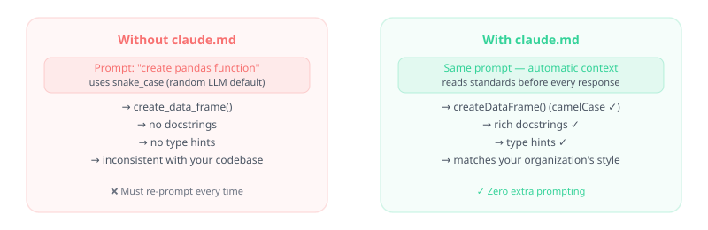
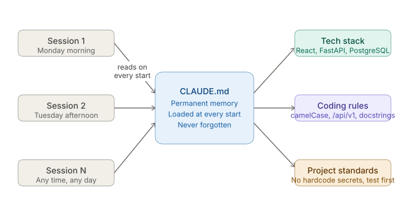
What to include
- Project purpose and architecture overview
- Tech stack (languages, frameworks, databases)
- Coding conventions and naming patterns
- Commands to build, test, and run
- Things Claude should never do (e.g., commit without asking)
# Example CLAUDE.md excerpt
## Stack
- Python 3.12, FastAPI, SQLite
- Frontend: React + TypeScript
## Commands
- `pytest` — run tests
- `uvicorn src.api:app --reload` — start API
## Rules
- Keep imports at top of file
- Only commit when explicitly asked
Place CLAUDE.md at the repository root or in .claude/CLAUDE.md.
Claude merges both. Update it as your project evolves — it is living documentation
for your AI pair programmer.
Every line in CLAUDE.md loads every session. Aim for under ~200 lines — specific rules, not essays. Put long workflows in skills instead (loaded only when invoked).
Module 08
Context Management
Claude has a finite context window — the total amount of text (measured in tokens) it can hold in working memory for one session. Managing context keeps Claude sharp across long conversations.
Token budgeting tips
- Start fresh sessions for unrelated tasks.
- Use sub-agents for deep exploration without polluting main context.
- Reference files by path instead of pasting large blobs.
- Keep CLAUDE.md focused — every line consumes tokens every session.
Compact, Clear, and Rewind
- /compact — summarizes older conversation to free space.
- /clear — wipes conversation history (keeps CLAUDE.md).
- /rewind — restores project files to a prior checkpoint (like undo for code).
Module 09
Skills — Reusable Playbooks
Skills are markdown instruction files (SKILL.md) that encode repeatable
workflows. Invoke them with a slash command instead of re-explaining the process every time.
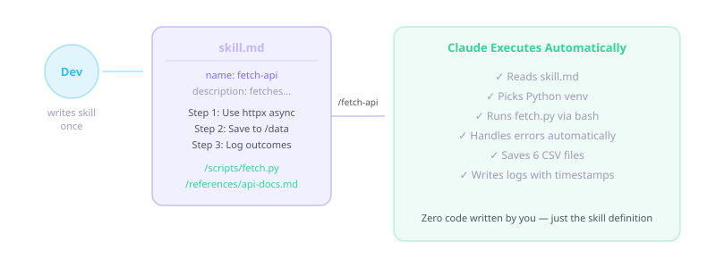
/skill-name → Claude follows your steps every time.claude/skills/deploy/SKILL.md
---
name: deploy
description: Deploy the app to staging
---
# Deploy to Staging
1. Run `npm run build`
2. Run `npm run test`
3. Deploy with `npm run deploy:staging`
4. Verify health endpoint
Skills live in .claude/skills/ (project) or your user skills directory (global).
They cost zero tokens until invoked — Claude reads the skill only when you trigger it.
.claude/skills/my-skill/
├── SKILL.md # steps (loaded only when invoked)
├── scripts/ # optional: pre-written Python/shell
└── references/ # optional: docs Claude should read/deploy — follows your skill exactly; best for repeatable automation.
CLAUDE.md is always loaded. Skills are on-demand playbooks for specific workflows like code review, deployment, or writing PR descriptions.
Point skills at scripts/ files instead of regenerating code each run — saves thousands of tokens and keeps behavior consistent.
Module 10
Hooks — Automatic Background Scripts
Hooks run scripts automatically on Claude Code events — without using tokens or prompts. They enforce standards, log activity, and guard security.
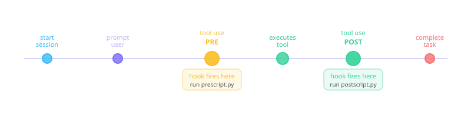
Popular use cases
- Security — block
rm -rfor force-push before execution - Logging — record every tool call to a file (zero LLM tokens)
- Notifications — ping Slack or play a sound when Claude needs input
- Validation — run lint/tests automatically after file writes
Example: auto-format on file write
// hooks.json
{
"hooks": {
"PostToolUse": [
{
"matcher": "Write|Edit",
"hooks": [{ "type": "command", "command": "python .claude/hooks/auto_format.py" }]
}
]
}
}Common hook use cases
- Auto-format Python/JS after every edit
- Block dangerous commands (rm -rf, force push)
- Log session activity to a file
- Run tests after code changes
Module 11
MCP — Model Context Protocol
MCP (Model Context Protocol) is an open standard that lets Claude connect to external tools and data sources: GitHub, Slack, databases, browsers, custom APIs, and more. Think of it as a USB-C port — one config format works across Claude Code, Cursor, and VS Code.
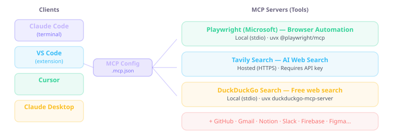
.mcp.json — servers expose tools like search, GitHub, or Playwright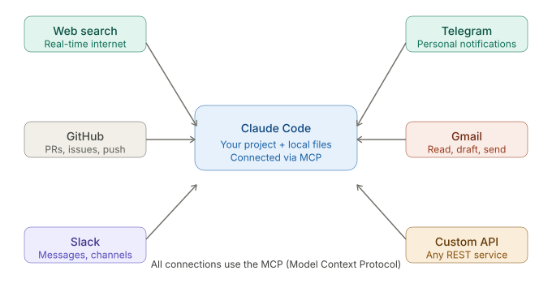
Local vs. hosted servers
| Type | How it runs | Best for |
|---|---|---|
| Local (stdio) | uvx or npx on your machine |
Most MCP servers today — secure stdin/stdout |
| Hosted (HTTP) | Provider URL + API key | Tavily search, managed APIs — no local install |
How it works
- You configure MCP servers in Claude Code settings.
- Each server exposes tools (e.g.,
create_issue,query_db). - Claude discovers and calls these tools during the agentic loop.
// Example MCP config (conceptual)
{
"mcpServers": {
"github": { "command": "npx", "args": ["-y", "@modelcontextprotocol/server-github"] },
"postgres": { "command": "npx", "args": ["-y", "@modelcontextprotocol/server-postgres", "postgresql://..."] }
}
}MCP turns Claude from a local coding agent into a hub for your entire toolchain. Combine it with live web search and browser automation for research-heavy tasks.
Only install servers you trust — they run with access mediated by Claude. Prefer well-known providers (e.g. Microsoft Playwright MCP) and check source before adding community servers.
Module 12
Sub-agents — Specialist Workers
Sub-agents are separate Claude sessions spawned for focused tasks. They run in isolated context windows, so exploration does not bloat your main conversation.
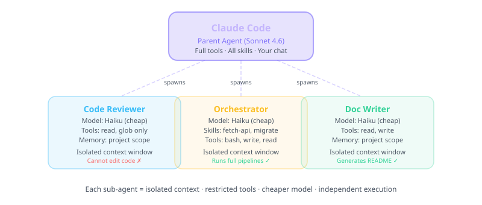
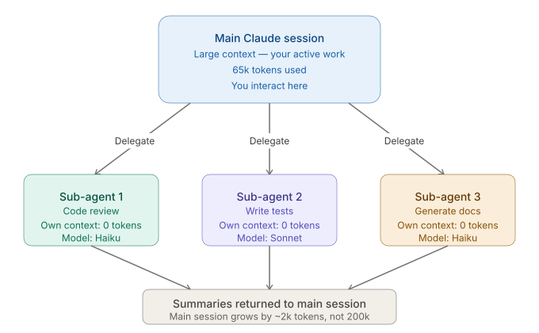
Benefits
- Use cheaper/faster models (Haiku) for simple sub-tasks.
- Parallel exploration of different parts of a codebase.
- Main session stays focused on orchestration.
Define agents in .claude/agents/ with a name, description, and instructions.
Claude Code's Task tool spawns them automatically when appropriate, or you can request one explicitly.
Module 13
Agent Teams — Parallel Coordination
Agent teams go beyond sub-agents: multiple Claude instances work in parallel on the same project, coordinating directly with each other.
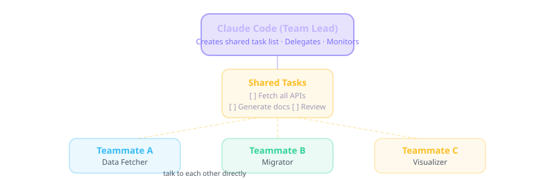
Agent Teams are beta — enable with "experimental_agent_teams": true in .claude/settings.json. Avoid production-critical workflows until stable.
| Feature | Sub-agents | Agent Teams |
|---|---|---|
| Context | Isolated, reports back | Shared project, peer coordination |
| Best for | Focused sub-tasks | Large parallel builds |
| Model choice | Can use Haiku per agent | Configurable per teammate |
Module 14
Plugins, Scheduling & Loops
Plugins
Plugins bundle skills, agents, hooks, and MCP configs into installable packages. Install a plugin once and gain an entire capability set — code review, deployment pipelines, security auditing, and more.
Scheduling & loops
Claude Code supports automated recurring runs — useful for nightly test fixes, dependency updates, or monitoring tasks.
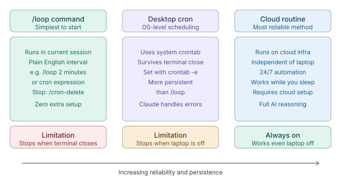
- Cron / Task Scheduler — run
claude -p "your prompt"on a timer. - CI/CD integration — GitHub Actions with Claude for PR review.
/loop— schedule prompts inside a session (e.g./loop 30m check deploymentor cron syntax/loop "0 9 * * *" run daily review).
# /loop examples (Claude Code 2.1.72+)
/loop 30m check if the deployment finished
/loop "0 9 * * *" invoke my fetch-api skill
/cron delete <job-id> # cancel a scheduled job/loop runs while your terminal session is active. For true background jobs, use system cron calling claude -p "…".
Module 15
Capstone Project — Task Manager App
The capstone ties every module together. You build a full-stack productivity app from a plain-English spec using Claude Code end to end.
Project spec (starter)
Build a Task Manager with:
- React frontend (TypeScript)
- FastAPI backend (Python)
- JSON file storage
- CLI + REST API
- Tests with pytestConcepts applied
- CLAUDE.md — define stack, commands, and conventions upfront.
- Agentic loop — Claude plans, scaffolds, implements, and tests.
- Sub-agents — separate test-writer and security-auditor agents.
- Hooks — auto-format Python after edits.
- Skills —
/build-appskill for repeatable scaffolding.
A reference implementation lives in this workspace in the
Task-Manager-App project folder. Open it in Claude Code and explore
the .claude/ configuration to see every concept in production use.
Pick one thing you want to build — a dashboard, automation script, or internal tool. Write a CLAUDE.md, install Claude Code, and describe the app in plain English. Let the agentic loop do the rest.